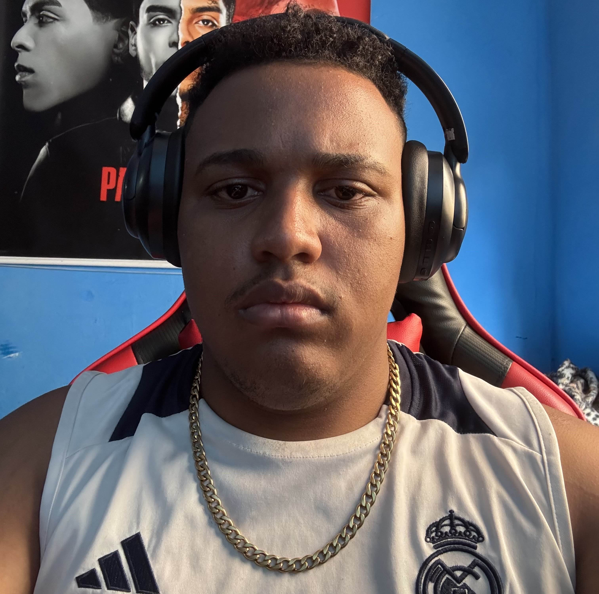

👋🏽 Hello World
Olá! me chamo Vitor Hugo, tenho 20 anos e sou estudante de desenvolvimento Front-End. Atualmente vou iniciar minha faculdade de Análise e Desenvolvimento de Sistemas na universidade de Franca SP.
Gosto de desenvolver interfaces bonitas e intuitivas trazendo uma boa experiência para o usuário. Obrigado pela atenção!
